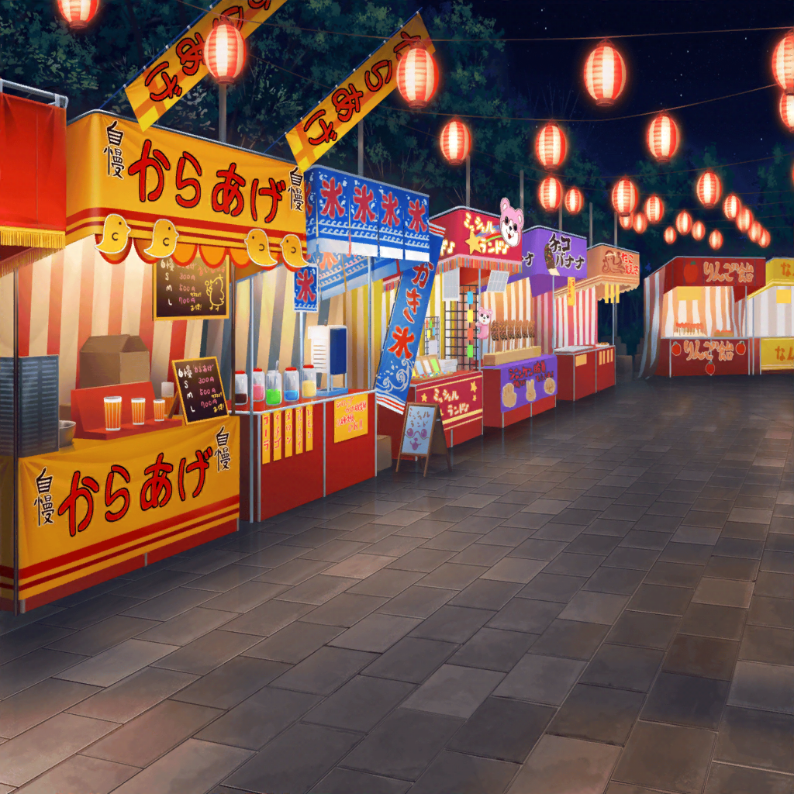

花火大会帰り道
縁日の通り
香澄
やっぱり帰り道もすごい人だね～
有咲
な？ だから、言ったろ？
もうちょっと待った方がいいって
香澄
けど、私、人が多いの嫌いじゃないよ！
たくさん人がいると、なんかこう……ワクワクしてこない？
有咲
だからって、わざわざ人が多いところを
通って帰ることもねーだろ？
ワクワクできたとしても、疲れるっつ……
香澄
ああ～！ 見っけ～！！
香澄
ねえねえ、有咲有咲有咲！
私、ちょっと寄りたいところがあるの！
有咲
うわ……
出た、またそのテンション……
有咲
お前、行きに縁日に寄っただろ？
私の制止を振り切って
有咲
それなのに帰りも寄るの？
さすがに、遅くなっちゃうし、もう帰ろうぜ
香澄
ううん、結局、あの時は人混みに流されちゃって
どこの屋台にも寄れなかったんだよ
香澄
だから、今度は行きたい屋台に寄りたいなって！
沙綾
そうだったんだ。
なら、どうせ帰り道だし、ちょっと寄っていこうか
香澄
わーい！ ありがとう、さーや！
だーい好きっ♪
有咲
……ったく、ホント、沙綾は香澄に甘いんだから
沙綾
それで、香澄の寄りたい屋台ってどれなの？
香澄
アレだよ、アレ！
あの屋台に行ってみたいって思ったの！
有咲
『サメつり』……？
なんだ、それ？ サメを釣るってどういうことだ？
香澄
ふふふ～、有咲も、やっぱり気になるでしょ？
それじゃあ、みんなで行ってみよう～！
香澄
わわっ、見てっ？
サメがいっぱいいるよ！
流れるプールみたいに、グルグルしてる！
有咲
サメって……なるほどな。
サメのおもちゃを釣るってことか？
香澄
私、やってみたーいっ！
おじさん！ １回お願いしまーす！
有咲
決断はやっ！
香澄
えっと、サメの口元の輪っかみたいなのに、
この釣り竿の針を引っ掛ければいいんだよね
香澄
私、こういうの得意なんだ～
沙綾
ちょっと待って。
サメの口の中に、紙みたいなのが入ってるけど？
有咲
たぶんあれがくじ引きみたいになってて、
あっちに並んでる景品が当たるって感じじゃん？
香澄
なるほど！ じゃあじゃあ、フィッシング開始っ！
私に釣られたいサメちゃん、いるかな～？
香澄
……いた！ 君だ～！
てい、このっ！
うぅ～、なかなか引っかからな～い……
有咲
香澄、そのサメよりこっちのサメの方が釣りやすくないか？
ていうか、なんでそんなにそのサメにこだわってるんだよ。
何か違いがあるわけ？
香澄
う～ん……
しいて言えば目かな？
有咲
意味わかんねっ！
香澄
有咲～！
じゃじゃ～ん！
景品取れたよ～♪
有咲
お、よかったじゃん。
で、なにが当たったんだ？
香澄
じゃじゃじゃじゃじゃ～～～～ん！
光る腕輪ぁ～！
有咲
……効果音のわりには、全然大したことないな
香澄
しかも５本入り～！
はい！ これ、みんなにもあげるね！
有咲
あ、ありがとっ。
でも、これ、どこでなんの目的に使うんだ……？
屋台の景品って用途不明なのが多いよな
香澄
えっとね……たぶん、待ち合わせの時に使うんだよ！
ほら、この腕輪、ピカピカ光ってるから、
遠くからでも見つけやすいし！
香澄
……あ！ ということは、
最初からこれがあれば、
私達はぐれなかったかもしれないよ！
有咲
は？
香澄
ほら～、だからやっぱり最初から屋台に寄るべきだったんだよ！
有咲
いやいや、お前……さすがにそれは後だしすぎるだろ